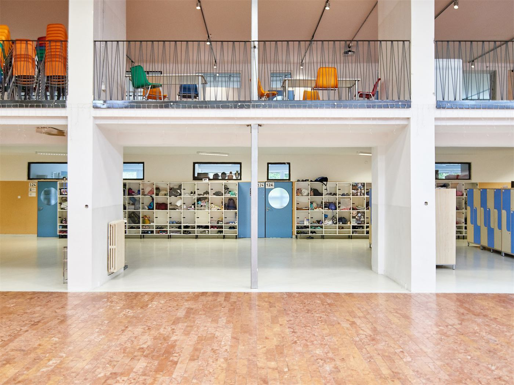
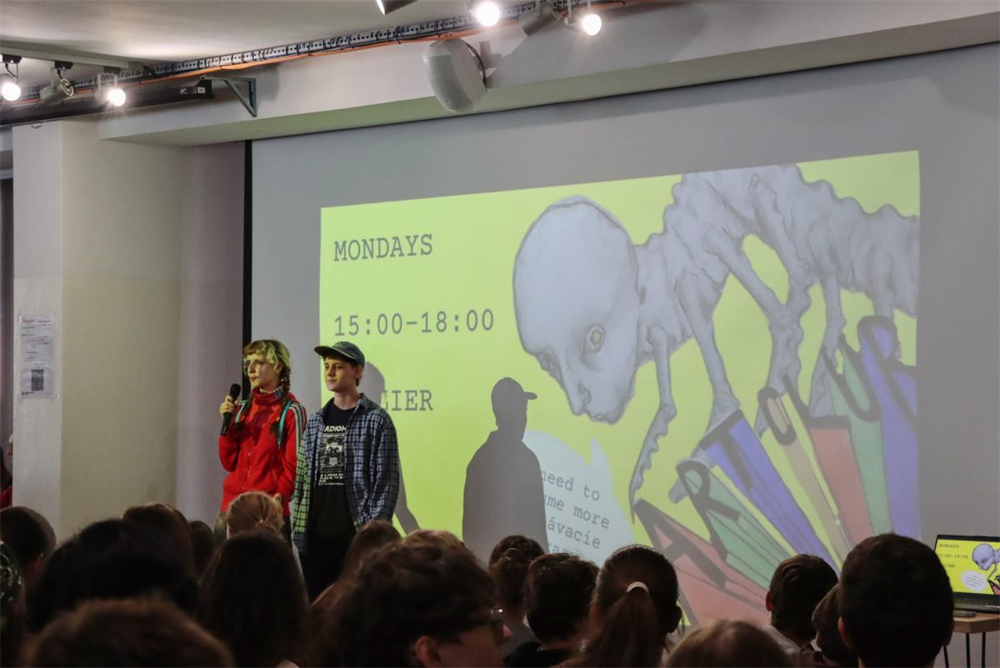
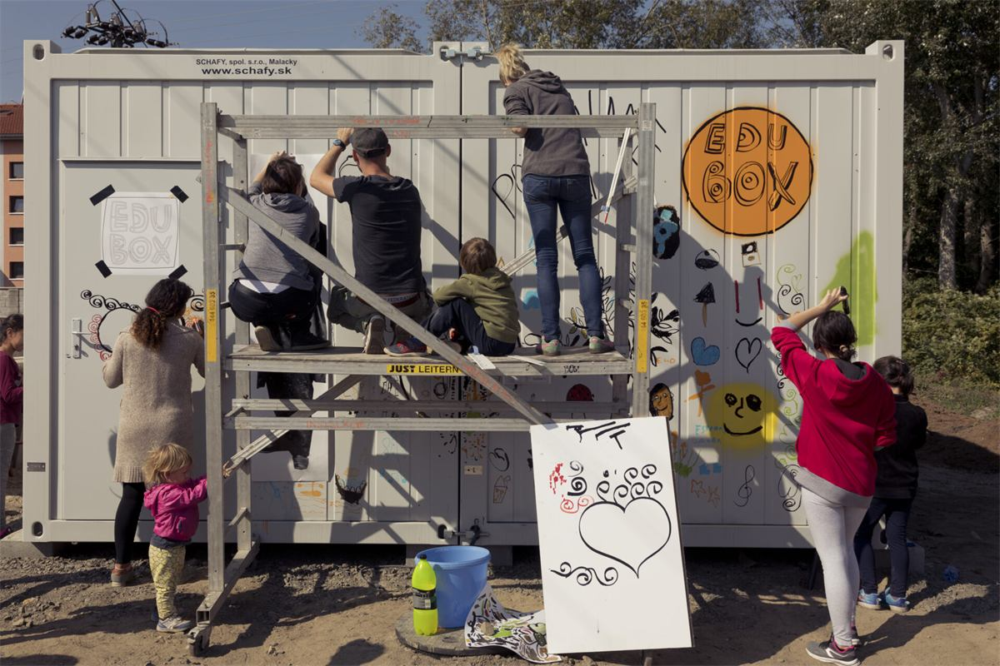
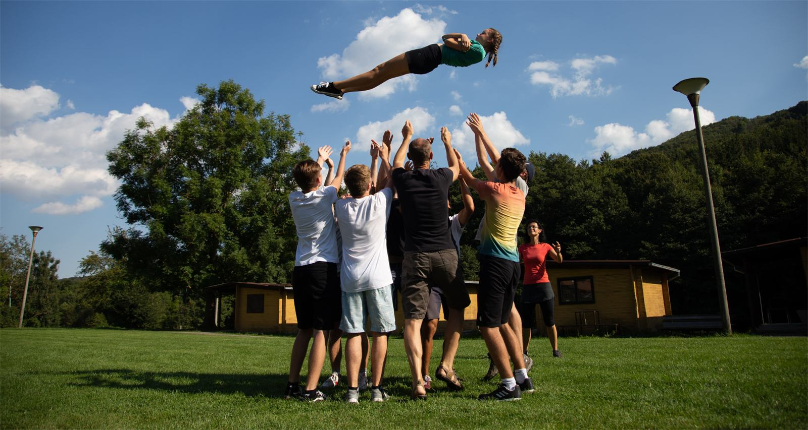
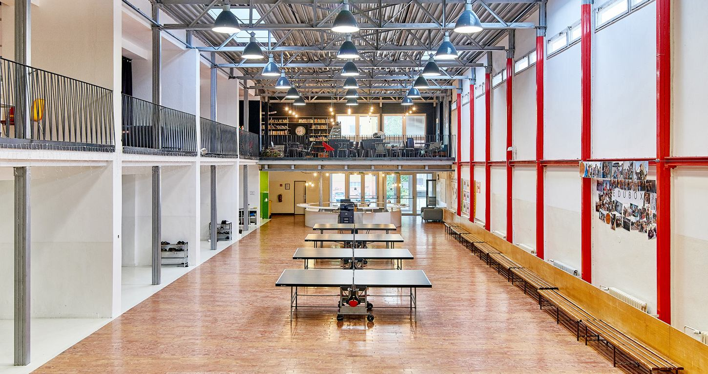
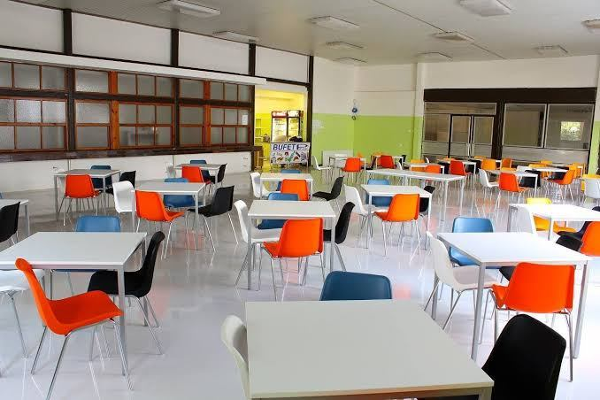
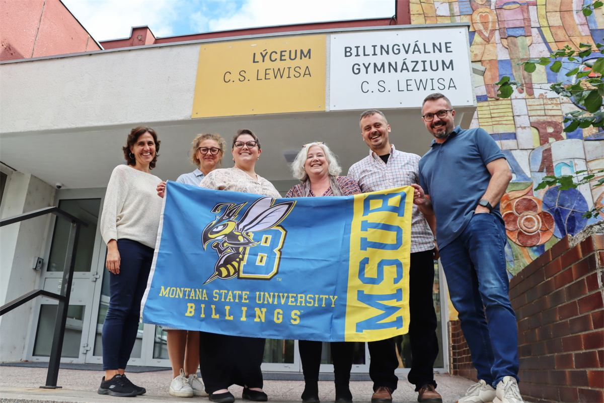
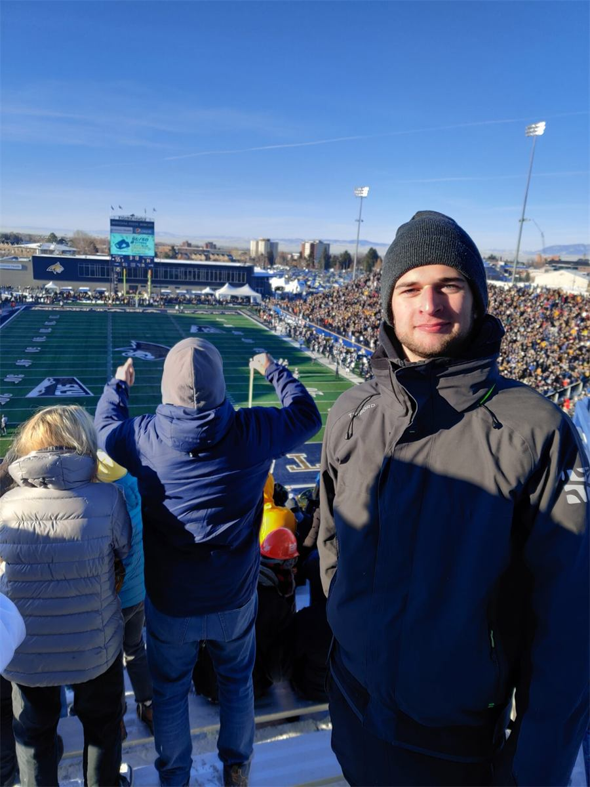
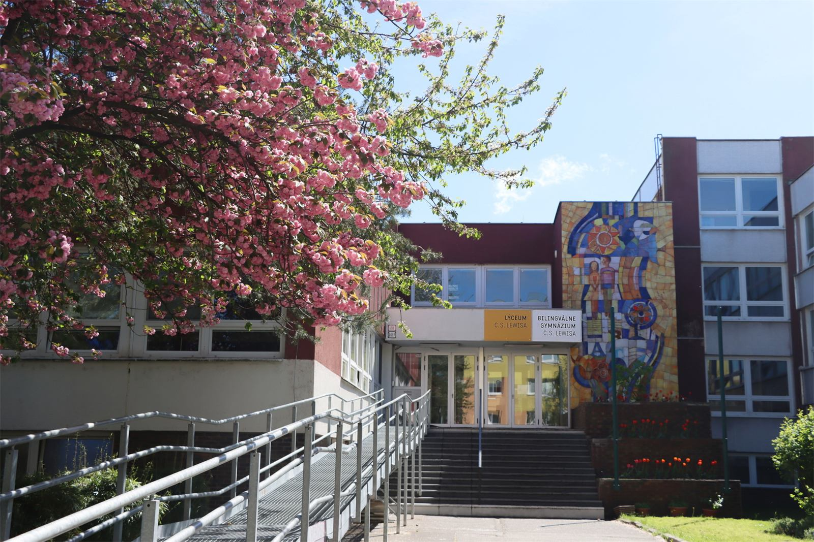

The Eagle & Child
Sociálny podnik, ktorý študenti otvorili 5. septembra 2016. Interiér z vyradených tabúľ, domáce koláče, ovocie a limonády cez prestávky. Časť výťažku ide do štipendijného fondu.
Bilgym je päťročné slovensko-anglické gymnázium v Petržalke. Vedomosti tu vedú k mysleniu, angličtina k novým svetom a malé triedy k ľuďom, ktorí vedia, kto si.

Vychovávame a vzdelávame k tvorivému a kritickému mysleniu, k zodpovednosti za seba, druhých a svet a k schopnosti budovať spoločenstvá – v rámci kresťanských biblických hodnôt.
Hodnoty sú pre nás rovnako dôležité ako vedomosti a zručnosti. Vedomosti bez hodnôt môžu byť nebezpečné – preto učíme aj to, ako žiť.
Ľudia, ktorí sa poznajú, vedú dialóg a radi spolupracujú. Nikto nie je ostrov – radšej staviame mosty ako múry.
Rozmanitosť je u nás hodnota. Budova je bezbariérová a štipendiá otvárajú dvere aj tým, ktorým život kladie prekážky.
Od roku 2012 má každý študent priestor premýšľať o svojich rozhodnutiach s mentorom, ktorý za neho nerozhoduje.


Päťročný program začína rokom intenzívnej jazykovej prípravy. Potom sa po anglicky učia aj odborné predmety – s cieľom úspešne zmaturovať a získať jazykové certifikáty uznávané v Európskej únii aj v USA.
Po slovensky ostáva slovenský jazyk, náboženstvo a etika a telesná výchova. Druhým cudzím jazykom je nemčina alebo španielčina.
Kto potrebuje, dostane jazykovú podporu navyše. Rok uzatvára Summer Semester Test.
Intenzívna angličtina, druhý cudzí jazyk a budovanie triednej komunity. Dobrovoľný mentoring so staršími študentmi (PeerMentoring).
Odborné predmety čoraz viac po anglicky. Mentoring je povinný – s vybraným mentorom sa stretávaš dvakrát mesačne.
Mentoring na základe dohody, témy si určuješ sám. Náboženstvo a etika sa presúva od identity k hodnotám.
Maturitu zo slovenského jazyka skladajú všetci študenti už vo štvrtom ročníku.
Maturita a prihlášky na vysoké školy doma aj v zahraničí – s pomocou školy aj absolventov.

Mentoring je individuálne sprevádzanie, ktoré dáva bezpečný priestor premýšľať o vlastných rozhodnutiach a objavovať svoj potenciál. Problémy berieme ako príležitosti na rast. Rozhodnutie je vždy na študentovi.
Mentori z radov učiteľov prechádzajú sériou výcvikov a pravidelnou supervíziou.
Mentoring koordinujú Terézia Jančovičová (2. ročník) a Zuzana Kotvanová (3. ročník a vyššie).
Viac o mentoringuKrúžky tu vedú učitelia, študenti aj priatelia školy, takže ponuka sa každý rok mení. Vznikajú z iniciatívy ľudí, ktorí chcú niečo priniesť aj ostatným.

Sociálny podnik, ktorý študenti otvorili 5. septembra 2016. Interiér z vyradených tabúľ, domáce koláče, ovocie a limonády cez prestávky. Časť výťažku ide do štipendijného fondu.

Pravidelné stretnutia s hosťami, ktorých príbehy – obyčajné aj neobyčajné – inšpirujú. Pýtať sa môže ktokoľvek, študent aj učiteľ.




Podporujeme študentov, ktorí chcú zažiť iné študijné prostredie – na polrok alebo celý školský rok na partnerskej škole. A svet prichádza aj k nám: zahraniční učitelia aj výmenní študenti cez Rotary Club. Štúdium v zahraničí koordinuje Blanka Štefan Antalová.



Súkromná kresťanská škola v Minneapolise (Minnesota, USA), ktorá prijíma študentov z celého sveta.
Dlhoročná partnerská univerzita. Spoločne skúmame aj možnosť, že by u nás pedagogickú prax absolvovali študenti učiteľstva z Montany.
Európske projekty a mobility pre študentov aj učiteľov.
Naše logo vychádza z Lewisovej Vesmírnej trilógie. Jej hrdina Ransom je filológ – a práve znalosť jazykov mu otvára cestu k pochopeniu nových svetov, kultúr a bytostí. Jeho cesta nie je len intelektuálne dobrodružstvo, ale aj osobná premena: objavuje hodnoty presahujúce individualizmus a nachádza svoje miesto vo veľkom príbehu.
Presne o tom je Bilgym. Kritické a tvorivé myslenie, hľadanie pravdy, prepojenie vedomostí so zodpovednosťou a dôležitosť komunity a služby.
Prvá z nich vznikla v roku 1994. Sieť tvoria ZŠ Narnia v Bratislave, Čiernej Vode, Trnave a Leviciach, Lýceum C. S. Lewisa a naše gymnázium. Zriaďovateľom je Združenie škôl C. S. Lewisa, ktoré založil Zbor Cirkvi bratskej v Bratislave.

Vždy 9:00 – 12:00 na Haanovej 28. Na každý termín je potrebné prihlásiť sa vopred – prihlasovanie sa spúšťa niekoľko týždňov pred termínom.

V školnom sú zahrnuté aj učebnice cudzích jazykov. Platí sa v dvoch splátkach, v odôvodnených prípadoch sa dá dohodnúť individuálny splátkový kalendár.
Platobné údaje a história školného| Zápisné jednorazovo, pre nových študentov | 700 € |
|---|---|
| Školné – 1. dieťa ročne | 3 870 € |
| Školné – 2. a ďalšie dieťa ročne, súrodenci študujúci súčasne | 3 230 € |
Štipendiá umožňujú štúdium aj študentom, ktorým rodinná alebo životná situácia kladie prekážky, no majú ambície a hodnoty v súlade s misiou Bilgymu.
Nenašli ste odpoveď? Napíšte nám na tajomnik@bilgym.sk.
Nie. Na škole študujú študenti z rôznych kresťanských tradícií aj študenti bez cirkevnej príslušnosti. Očakávame však rešpekt ku kresťanskému charakteru školy. Hodiny náboženstva a etiky sú ekumenické a venujú sa vzťahom, identite, Biblii aj etickým otázkam.
Prijímacia skúška z angličtiny je na úrovni A2. Prvý ročník je zameraný na intenzívnu jazykovú prípravu (13 hodín týždenne) a kto potrebuje, dostane podporu navyše.
Áno. Ôsmaci aj deviataci majú rovnaké podmienky prijatia, žiadna skupina nie je zvýhodnená. Výsledky Testovania 9 sa nezohľadňujú.
Závisí to od ročníka. Po slovensky sa vždy učí slovenský jazyk, náboženstvo a etika a telesná výchova. Učebnice sú britské, no pri maturite sa hodnotí, či študent rozpozná rôzne varianty angličtiny a používa ich dôsledne.
Nemčinu alebo španielčinu, podľa prvej preferencie. Ak je potrebné vyrovnať veľkosť skupín, môžeme študenta zaradiť podľa druhej preferencie. Jazykové skupiny sa delia podľa úrovne.
Nie, dress code ani uniformy nemáme.
V škole je bufet, kaviareň, mikrovlnka a jedáleň s denným menu vrátane bezlepkovej a vegetariánskej možnosti. Spolupracujeme s internátom na Vranovskej ulici v Petržalke, kde je pre študentov Bilgymu vyhradené zrekonštruované poschodie.

Absolventov vyprevádzame do sveta – k ďalšiemu štúdiu, práci či rodine – a radi s nimi zostávame v kontakte. Cez Alumni College Mentoring pomáhajú súčasným študentom s prihláškami na vysoké školy.
Autom: do navigácie zadajte Haanova 26 – na číslo 28 vás zvykne naviesť za budovu. Bicykel si môžete odložiť priamo v budove.
